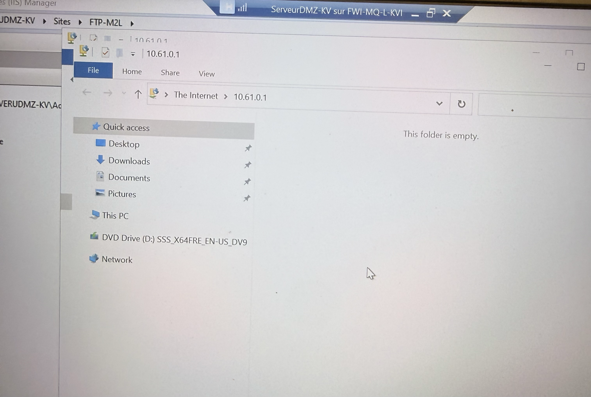

Déploiement des serveurs M2L
Installation et configuration des services Active Directory, DHCP, IIS et FTP sur Windows Server 2022 sous Hyper-V — infrastructure de production simulée pour la Maison des Ligues M2L.
La mission
Dans le cadre du BTS SIO SISR, j'ai déployé l'infrastructure serveur de la Maison des Ligues M2L au CFA CCI Martinique. L'objectif était de partir d'une VM Windows Server vierge et de mettre en place tous les services réseau essentiels : gestion des identités (AD), adressage automatique (DHCP), site web interne (IIS) et transfert de fichiers (FTP).
Objectifs
- Déployer un contrôleur de domaine Active Directory (domaine m2lgroupekv.local)
- Configurer un serveur DHCP avec une étendue 172.21.0.10–50
- Mettre en place un site web IIS accessible en interne
- Créer un serveur FTP sur la DMZ (10.61.0.1)
Environnement
- Hyperviseur : Hyper-V Windows 11
- OS serveur : Windows Server 2022
- Réseau LAN : 172.21.0.0/24
- Réseau DMZ : 10.61.0.0/24
- Durée : 1 journée complète de TP guidé
Plan réseau
Deux interfaces réseau configurées sur la VM serveur : une côté LAN pour AD/DHCP/IIS, une côté DMZ pour le serveur FTP.
| Service | Adresse IP | Réseau | Description |
|---|---|---|---|
| AD DS + DNS | 172.21.0.10 | LAN | Contrôleur de domaine m2lgroupekv.local + DNS intégré |
| DHCP | 172.21.0.10 | LAN | Étendue 172.21.0.10–50, passerelle 172.21.0.254 |
| IIS | 172.21.0.10 | LAN | Site web interne (port 80), page d'accueil par défaut |
| FTP (DMZ) | 10.61.0.1 | DMZ | Serveur FTP M2L-FTPROOT, authentification basic, port 21 |
Installation étape par étape
Depuis le tableau de bord Server Manager jusqu'à la validation de l'étendue DHCP active et l'inscription AD. Cliquer sur une image pour l'agrandir.


Résultats obtenus
Preuve de fonctionnement : étendue DHCP active avec baux distribués et domaine AD opérationnel avec machines intégrées.


Services web & fichiers
Installation du serveur web IIS sur le LAN et configuration du serveur FTP sur la DMZ (10.61.0.1). Test de connexion et upload de fichier validé.





Ce que j'ai appris
Active Directory & DNS
Création d'une forêt AD, promotion du contrôleur de domaine et intégration DNS — socle de toute infrastructure Windows.
DHCP & adressage
Configuration d'une étendue DHCP avec plage, passerelle et DNS, puis validation par l'attribution dynamique des baux.
IIS & FTP
Déploiement d'un site web interne IIS et d'un serveur FTP sur DMZ séparée, avec test de transfert de fichier abouti.